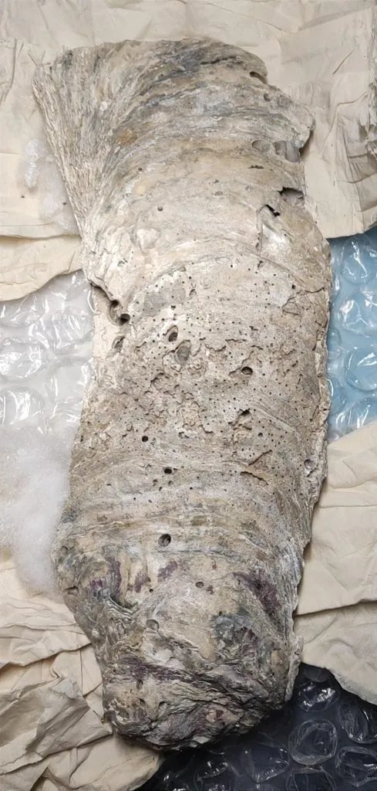

软体动物 · 动物界
近江牡蛎 Magallana ariakensis

中国沿海大型牡蛎，贝壳厚重、壳形不规则，生活在河口咸淡水交汇处，是华南地区重要的养殖和食用贝类。
- 分类
- 门软体动物门纲双壳纲目牡蛎目科牡蛎科属巨牡蛎属
- 栖息环境
- 河口咸淡水交汇处的潮间带和浅海，靠左壳固着在硬质基底上
- 地理分布
- 中国沿海以及日本、朝鲜半岛的河口和近岸海域
- 保护级别
- 暂无评估；中国未列入国家重点保护野生动物名录（重要养殖贝类）
物种志
近江牡蛎的贝壳大型而厚重，壳形不规则：左壳深凹，固着在基底上，右壳较平，像一枚盖子。壳面有层层叠叠的生长纹，颜色灰白、黄褐或紫黑，壳长可达 15–30 cm，是体型较大的牡蛎。
近江牡蛎分布于中国沿海、日本有明海和朝鲜半岛，栖息于河口咸淡水交汇处的潮间带和浅海，靠左壳终生固着在礁石、堤坝和桩柱上。它是滤食性动物，靠鳃过滤浮游生物和有机颗粒，一只成体每天能过滤大量海水。牡蛎有性变现象，同一个体可以在雌雄之间转换；繁殖期在夏季，体外受精，幼体浮游一段时间后固着。近江牡蛎耐低盐，适合在河口养殖，肉质肥厚，是华南地区重要的食用贝类，可鲜食、晒蚝豉，也可用来熬制蚝油。目前它没有IUCN 的正式评估，中国未将其列入国家重点保护野生动物名录。
形态与习性
- 食性滤食浮游生物和有机颗粒，靠鳃过滤海水
- 壳长可达 15–30 cm
- 栖息环境河口咸淡水交汇处，耐低盐
- 繁殖夏季繁殖，有性变现象，体外受精
- 养殖华南地区重要的食用贝类，可鲜食、晒蚝豉、熬蚝油
- 固着靠左壳终生固着在礁石、堤坝和桩柱上
趣味知识
- 近江牡蛎喜欢河口咸淡水交汇的环境，能耐受较低的盐度。
- 它的壳厚重而不规则，靠左壳终生固着在礁石或堤坝上。
- 近江牡蛎是华南沿海重要的养殖贝类，可鲜食、晒蚝豉、熬蚝油。